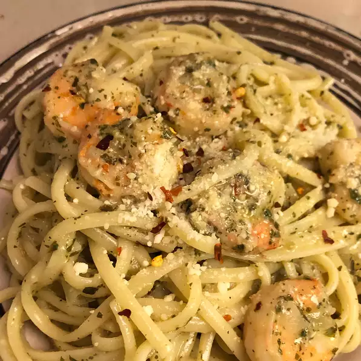

Pesto Shrimp Pasta

Description
The sauce in this amazing Indonesian curry might be invisible, but you'll know it's there. As it reduces, the
water evaporates, leaving behind the fat and flavor that make this dish so unique and addictive. Originally,
cooking meat this way helped preserve it in hot and
humid Indonesia. Turns out, people continued making it long after refrigeration came around. Serve with steamed
rice, garnished with cilantro and lime if desired.
Ingredients
- 1 (8 ounce) package spaghetti
- 1 cup fresh basil leaves
- ¼ cup lemon juice
- 3 tablespoons olive oil
- 1 clove garlic, or to taste
- ½ teaspoon salt
- 2 teaspoons olive oil
- 1 (8 ounce) package sugar snap peas
- ¾ pound peeled and deveined shrimp
- ⅛ teaspoon crushed red pepper
Directions
-
Step 1
Bring a large pot of lightly salted water to a boil. Cook spaghetti in the boiling water, stirring
occasionally until cooked through but firm to the bite, about 12 minutes; drain.
-
Step 2
Blend basil, lemon juice, 3 tablespoons olive oil, garlic, and salt in a blender until smooth.
-
Step 3
Heat 2 teaspoons olive oil in a skillet over medium heat. Cook and stir sugar snap peas in hot oil until
tender, about 5 minutes. Add shrimp and red pepper; continue to cook until the shrimp are bright pink on the
outside and the meat is no longer transparent in the center, about 5 minutes. Stir basil sauce into the
shrimp mixture and remove from heat; spoon over spaghetti to serve.